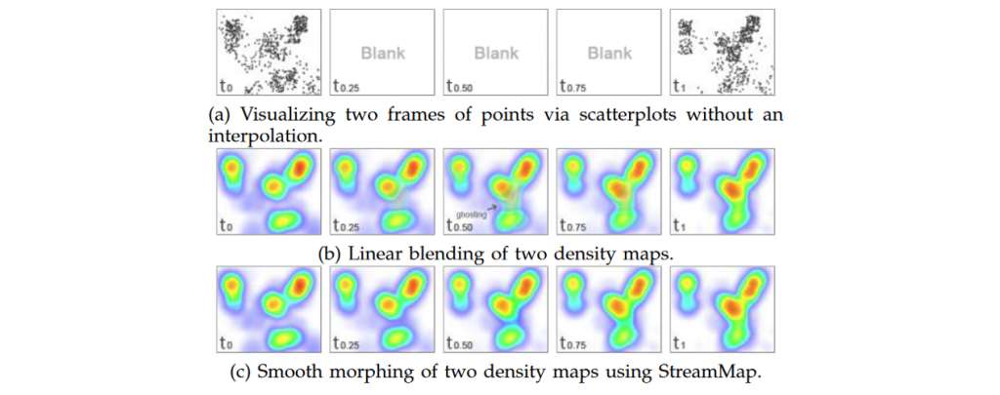
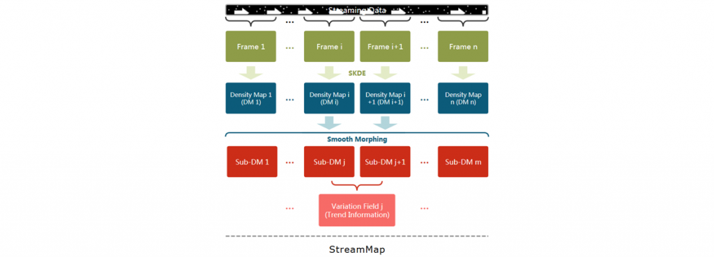

日期：2022年10月16日 作者：石青
2022年10月16日星期五下午，石青在组会中报告了论文《StreamMap: Smooth Dynamic Visualization of High-Density Streaming Points》，这篇论文提出了一个新的方法，可以平滑地融合高密度的点随时间的变化，并创建一个强调密度模式分布的可视化方法，他的目的是对流间模式进行更好的可视化与交互。
随着来自社交媒体网络、空气质量监测、GPS跟踪和实时在线零售等领域的时变数据量不断增加，流数据可视化的研究变得尤为重要。在对流数据进行可视化时，由于数据流中的大部分特征可以描述为二维空间网格上的点，例如地理位置、网络图中的节点以及大气或环境传感器数据，因此二维点数据模型是实际中最常用的模型。

散点图已经被用于研究二维数据很多年了，但是当数据流中包含高密度点结构时，散点图会发生重叠(图1(a))。这个问题被称为过绘，并且随着数据规模的爆炸式增长而变得更加显著。此外，直接将流点可视化为动态散点图而不进行插值会导致一个显著的突变问题(图1(a))，因为在两个散点图之间缺少视觉连续性。具有视觉连续性的平滑动态点可视化的优点可以概括如下。首先，与粗糙的、非平滑的动态散点图可视化相比，人类视觉系统非常适合识别动态区域形状的变化。其次，随着数据规模呈指数增长，在单个图像帧中显示足够的信息变得越来越困难。虽然一些技术，如分箱和摘要为目标显示执行重采样和数据还原，但静态图像的像素数量将始终是有限的，而数据流中的点很容易超过显示容量。第三，与静态可视化相比，在本文方法中的变形操作中产生了中间模式，这些额外的模式可以包括数据趋势。
直方图和核密度估计( KDE )被用来克服重叠问题。然而，直方图有一些缺点：1）平滑性较差，并且被分组的选择约束。2）KDE需要手动调节带宽来估计流点的密度。3）为了创造视觉连续性，传统的两帧之间的线性插值是一种实用的解决方案。然而，当数据流包含较大的变化时，这种方法会产生视觉伪影模式，如图1(b)所示。此外，线性插值产生的信息并不总是产生视觉上可接受的趋势模式，特别是在点云区域。因此，一个两个帧之间平滑的变形(平滑混合)方法是必要的，更容易观察和评估数据流可视化。
为了解决上述问题，本文提出了一个新的框架来表示流点，称为Stream Map (图2)。Stream Map提供了大范围点云的平滑动态可视化，如图1(c)所示。本文将流点可视化任务定义为既是密度估计问题，又是在给定时间间隔内创建包含两组点的一对帧之间的平滑插值问题。我们对高密度点流的可视化方法是将两帧图像平滑变形，从而克服动态可视化中的重叠和突变。与以前的算法相比，Stream Map不仅克服了高密度点可视化中的重叠问题，而且减少了动态可视化中常见的伪影。此外，本文还在两个框架中动态地展示了特征的演化。

本文的StreamMap模型（图2）构建如下：
( 1 )为了克服重叠问题，本文提出了一种称为SKDE的基于super point的估计方法，从一个时间段的流点数据获得一个准确的密度图。SKDE通过使用快速点聚类方法的自适应内核选择来获得精确的密度图。
( 2 )为了创建可视化连续性和解决可视化鬼影问题，本文使用一个平滑的过程来动态可视化数据流。
( 3 )为了识别和表示点流中的趋势，本文设计了一种趋势表示方式，可以帮助用户获得对点流变化的洞察。
本文计算了结构相似度( SSIM )来评估变形效果。更相似的密度图可以获得更高的SSIM分数。本文从Sec的AD数据集中选取了170个连续帧。使用SKDE根据选定的帧生成密度图序列。我们定义了17个密度图作为一个组，其中第一个和最后一个密度图是平滑变形模型( I和T)的输入。我们使用其余的作为基准。总体而言，我们的测试数据包括10组。对于每个组，使用来自15次迭代的变形方法生成15个子DM。我们根据选择的t定义了两个度量来评估变形过程的有效性。对于第一个测量，本文将介于密度图和基准密度图之间的SSIM定义为变形准确率(MAR)，用于评价变形精度。图3(a)显示了使用三种不同方法得到的MAR结果：线性混合、扩散模型和本文的方法。正如这些结果表明的那样，本文的平滑变形结果与基准结果非常吻合，显著优于另两个方法。
另一种度量称为变形完成率(MCR)，它定义了介于密度图和目标密度图之间的结构相似度( SSIM )(T)。MCR用于评估是否在有限次迭代中执行变形操作。如果中间密度图类似于目标密度图(T)，那么MCR将接近于1。图3(b)显示了使用三种不同方法得到的MCR结果。这些结果表明，本文的方法达到了最好的MCR，而扩散模型需要更多的迭代来完成变形。
本文提出了一种动态可视化高密度流点的新方法Stream Map。在全面概述了相关工作之后，例如散点图和线性混合，本文展示了这些技术如何导致动态可视化中发生突然急剧变化和伪影的显著原因。然后，本文提出SKDE方法将高密度点自适应地聚类成规则的密度图和一种新的基于扩散的算法来实现两个估计密度图之间的平滑变形。最后，介绍了一种增强Stream Map可视化效果的趋势表示方法。实验证明了本文方法的可扩展性。通过Stream Map的可视化可以很容易地发现变化的模式。
Stream Map仍存在一定的局限性：
1）虽然采用了自适应带宽选择的KDE方法( SKDE )来估计高密度点的密度，但是密度等值线和峰值的精度仍然需要提高。
2）变形操作的精度需要进一步提高，特别是对于”移动”变形模式的处理。
3）当前的趋势表示也受到过度的影响，这可能会影响密度模式的发现。
4）对于没有”流”性质的数据集，例如Web门户登录和城市噪音，平滑的变形工作很好；然而，趋势表征很可能不会呈现有效状态。
未来的一个探索方向是可视化高密度特征区域的演化，以提供长周期流数据的概览。Stream Map将生成不同帧的高密度特征，并通过桑基图进一步补充可视化效果。